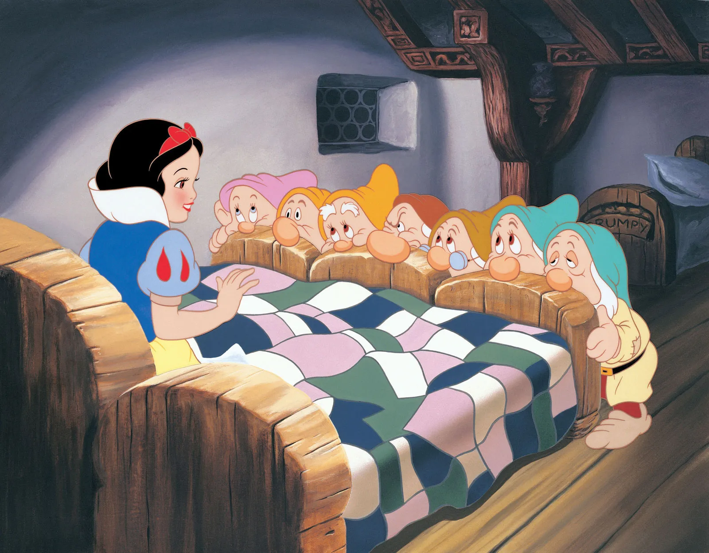

A sequel to the story of HTML and CSS:
"While Harry and Chidi spent their next years building their beautiful rich, life, they found as they grew older that something important was missing in their lives - a child.
So they adopted young Jav.
Jav completely changed Harry and Chidi’s world and brought life to things that previously seemed grey and boring for them. Having Jav meant that they were shown a new way of existing.
Jav was the type of person that could walk into any room and immediately liven it up, could pick up any object and make you see it in a new light, could take any conversation and inspire new ideas.
As well as being a incredibly adept at mathematics, Jav would later grow up to be an incredibly talented and successful playwright, writing scripts that were filled with complexity and action.
heir happy little home became filled with Jav’s work and together as a little family, the three of them lived happily ever after.“
Control flow is how the code in your Javascript is read and run. Think of control flow like playing a record.
The needle follows the grooves of your vinyl record as it spirals in - going in one direction and reading all of the information as it goes.
Occasionally your needle may come across a scratch in your record, meaning that the song it is playing will skip or…you guessed it - loop and repeat.
window > document > html > body > div > h1/p/img/div Objects can be anything and can be assigned properties like characteristic.
For example Snow White is a princess, who likes to clean, and her favourite fruit is apple.
princess = {
name: ‘Snow White’,
hobby: ‘cleaning’
favouriteFruit: ‘apple’With objects you can access data by using dot notation or bracket notation. Both of these methods is like a filing system and gets you to specify which property you are wanting.
// Dot notation
objectPrincess.favouriteFruit // returns 'apple'//
Bracket notation
person['favouriteFruit'] // returns 'apple'Arrays can store multiple items as below, as if they are in a queue
sevenDwarves = [’Grumpy’, ‘Dopey’, ‘Bashful’, ‘Happy’, ‘Sleepy’, ‘Doc’, ‘Sneezy’];Imagine they are all in a queue at McDonald’s and as ‘Grumpy’ was first in the queue, his order number is [0]. Dopey has order number [1], and so on until Sneezy at [6].
To access something in an array, you can call its position in the queue, like calling a McDonald’s order.
sevenDwarves[4]; // returns ‘Sleepy’.
Functions in JavaScript allow us to perform mini tasks or calculate things for us. They are little worker bees that can find something for us, and be able to return information or, or change things.
First a function gets defined - we state what it is or what it does - and then once called, it performs its duty.